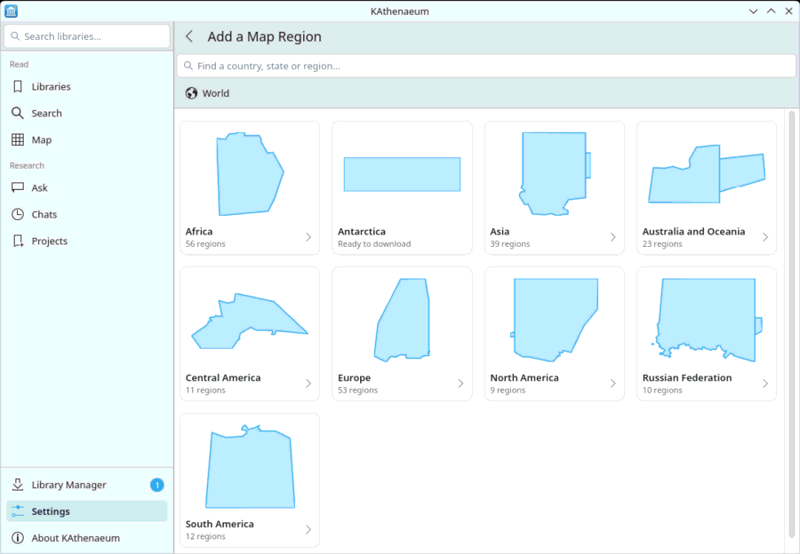

Maps are downloaded once and then work offline. In → , choose . Start with the world overview (about 45 MB: every country's coasts, borders, cities and main roads), then add the countries, states or regions you want: each card shows the region's shape, and leads to the regions inside it (North America, then the United States, then Oregon).

A region offers two levels of detail, each with its size: Streets and buildings, or Roads and towns, about a fifth of the size. To know which places have Wikipedia articles, KAthenaeum also downloads the region's OpenStreetMap data, reads it once and deletes it. Settings shows each region's progress, and lets you update a region to the newest map or remove it.